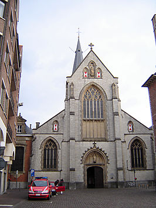

De Sint-Nicolaaskerk is een kerk in de Belgische stad Sint-Niklaas. Ze is gewijd aan Sint-Nicolaas van Myra, Sint-Barbara en Sint-Johannes Nepomucenus. De kerk staat aan de oostzijde van de Grote Markt. Deze vijfbeukige kerk is de hoofdkerk van het dekenaat Sint-Niklaas en is sinds 1971 beschermd.
Het interieur is overwegend Barok en Neogotisch. De kerk heeft 4 beuken en een middenschip. In het koor hangen de oude processievaandels die herinneren aan de oude broederschappen. De kerk heeft 7 altaren, waarvan 5 oude. Daarnaast is er een doopkapel en een grafkapel. Aan de westerzijde zijn nog een reeks neogotische glasramen bewaard gebleven.
Het meubilair omvat onder andere zes biechtstoelen, waarvan twee barokke, twee classicistische en twee neogotische, koorbanken uit 1900. Ook de barokke preekstoel uit 1706, met Antwerps houtsnijwerk van schrijnwerker Michiel Verbanck is van uitmuntende kwaliteit. De kuip wordt ondersteund door een levensgrote houten sculptuur van Nicolaas van Myra. Achteraan staat een drieklaviersorgel in Zuid-Duitse barokke stijl, gebouwd in 1998 door de Firma Draps. Het orgel wordt gebouwd in verschillende fasen, en moet ruim 3000 pijpen tellen als het grootste orgel van het Waasland. In het koor staat een kleiner tweeklaviersorgel gebouwd door de Firma Pels.
De Sint-Nicolaaskerk bezit een rijke kerkschat met belangrijke relieken, liturgisch edelsmeedwerk uit de 17e-19e eeuw en religieus vaatwerk. Zo is er onder andere een cilindermonstrans uit 1635 door Wierick Somers en Pieter Jacobs.
Buiten de kerk (sacramentsstraat) is een barokke stenen sculptuur van de Aanbidding van het goddelijke Sacrament door twee cherubijntjes.